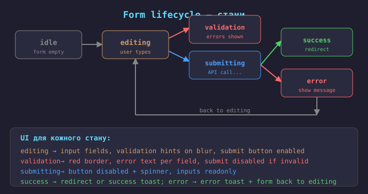
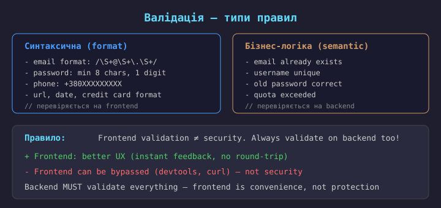
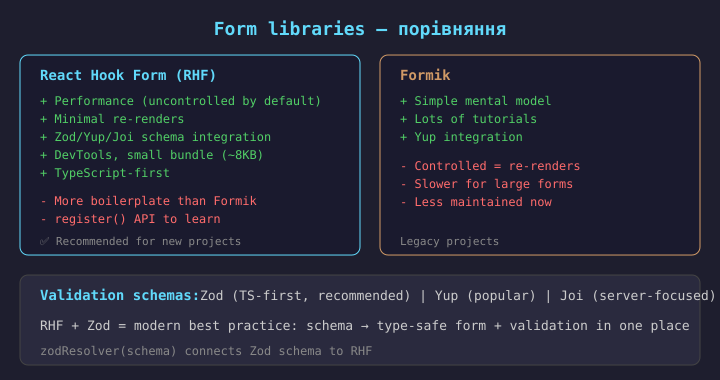
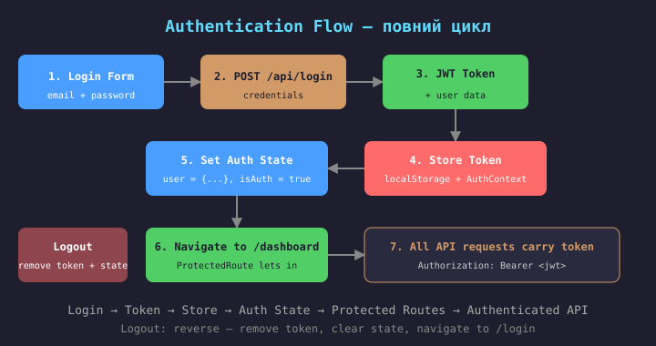
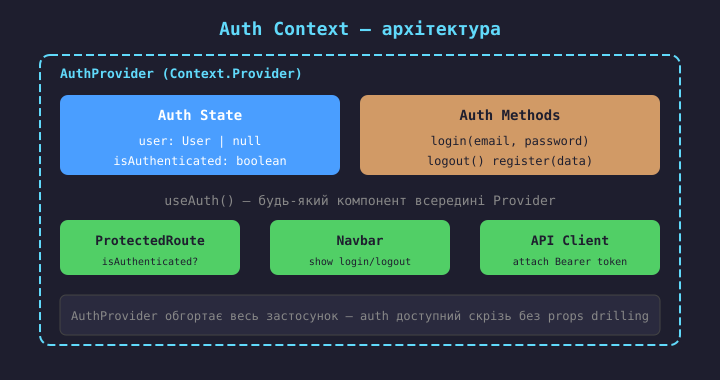
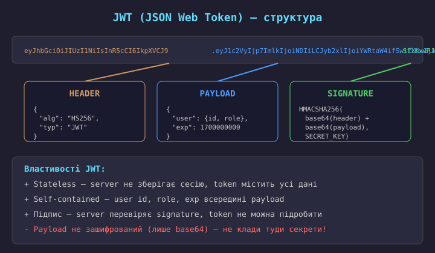
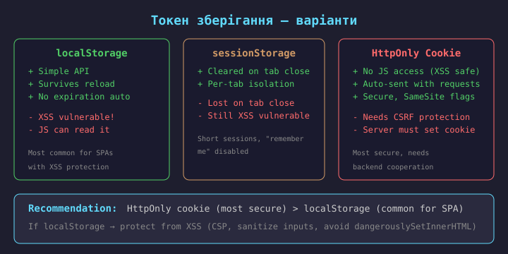
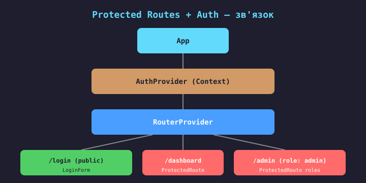
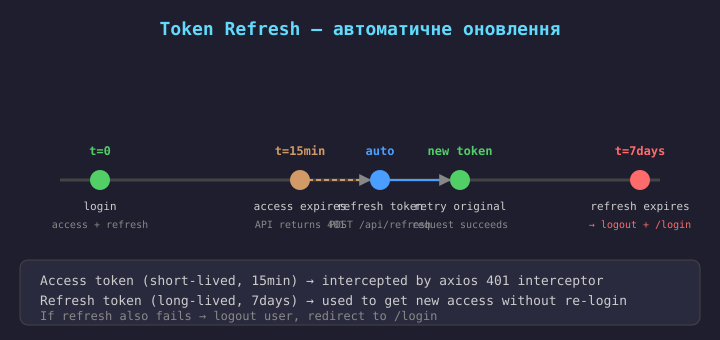
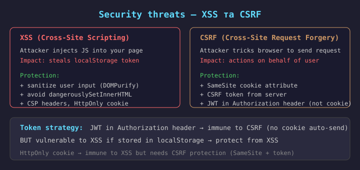

У React форми працюють інакше, ніж у традиційному HTML. замість того, щоб DOM керував станом форми, React керує станом через state.
Ключові концепції:
onSubmit + e.preventDefault();У Vue аналоги — v-model (controlled) та $refs (uncontrolled).
// Controlled (React керує)
const [name, setName] = useState("")
<input
value={name}
onChange={e => setName(e.target.value)}
/>
// state → input → state (loop)
// Uncontrolled (DOM керує)
const inputRef = useRef()
<input
ref={inputRef}
defaultValue="hello"
/>
// read: inputRef.current.value
Rule: use Controlled by default. Uncontrolled only for simple cases (file input, integrate 3rd-party).
function LoginForm() {
const [email, setEmail] = useState("");
const [password, setPassword] = useState("");
const handleSubmit = (e: FormEvent) => {
e.preventDefault();
console.log({ email, password });
// API call...
};
return (
<form onSubmit={handleSubmit}>
<input
type="email"
value={email}
onChange={(e) => setEmail(e.target.value)}
/>
<input
type="password"
value={password}
onChange={(e) => setPassword(e.target.value)}
/>
<button type="submit">Login</button>
</form>
);
}
Controlled pattern:
useState зберігає значення;value прив'язаний до state;onChange оновлює state;Переваги:
setEmail(""));Недолік: re-render на кожен keystroke (для більшості форм — не проблема).
import { useRef } from "react";
function QuickForm() {
const emailRef = useRef<HTMLInputElement>(null);
const fileRef = useRef<HTMLInputElement>(null);
const handleSubmit = (e: FormEvent) => {
e.preventDefault();
const email = emailRef.current?.value;
const file = fileRef.current?.files?.[0];
console.log({ email, file });
};
return (
<form onSubmit={handleSubmit}>
<input type="email"
ref={emailRef}
defaultValue="old@example.com" />
<input type="file"
ref={fileRef} />
<button type="submit">Submit</button>
</form>
);
}
Uncontrolled pattern:
useRef посилається на DOM-вузол;defaultValue — початкове значення;ref.current.value при submit;Коли використовувати:
<input type="file"> — єдиний варіант;Правило: за замовчуванням — controlled. Uncontrolled — лише коли є причина.

type FormData = {
name: string;
email: string;
age: number;
role: string;
};
function UserForm() {
const [form, setForm] = useState<FormData>({
name: "", email: "", age: 0, role: "user"
});
const handleChange = (e: ChangeEvent) => {
const { name, value, type } = e.target;
setForm(prev => ({
...prev,
[name]: type === "number"
? parseInt(value)
: value
}));
};
return (
<form onSubmit={handleSubmit}>
<input name="name" value={form.name}
onChange={handleChange} />
<input name="email" value={form.email}
onChange={handleChange} />
<input name="age" type="number"
value={form.age} onChange={handleChange} />
<select name="role" value={form.role}
onChange={handleChange}>
<option value="user">User</option>
<option value="admin">Admin</option>
</select>
</form>
);
}
Один state-об'єкт для всіх полів форми.
Переваги:
handleChange для всіх полів;name атрибут = ключ у state;setForm(initial).Важливо: використовуйте
функціональну форму setForm(prev => ...)
щоб не втратити дані при швидкому введенні.
Checkbox: e.target.checked
замість value.
select multiple: потребує окремої обробки.

// 1. On Submit
handleSubmit = (e) => {
e.preventDefault();
const errors = validate(form);
if (Object.keys(errors).length)
return setErrors(errors);
submit(form);
}
// всі помилки одразу
Recommended approach
onBlur → validate field when user leaves input (no annoying errors while typing);onChange → clear error when user starts fixing;onSubmit → validate all fields before submit.// 2. On Change (live)
handleChange = (e) => {
const { name, value } = e.target;
setForm(f => ({...f, [name]: value}));
const err = validateField(name, value);
setErrors(e => ({...e, [name]: err}));
}
// помилки одразу при введенні
// 3. On Blur (recommended)
handleBlur = (e) => {
const { name, value } = e.target;
const err = validateField(name, value);
setErrors(e => ({...e, [name]: err}));
}
// помилки коли поле
// втратило фокус
type FormErrors = { name?: string; email?: string; password?: string };
function validate(form: FormData): FormErrors {
const errors: FormErrors = {};
if (!form.name.trim()) errors.name = "Name is required";
if (form.name.length < 2) errors.name = "Name too short";
if (!/^\S+@\S+\.\S+$/.test(form.email)) errors.email = "Invalid email";
if (form.password.length < 8) errors.password = "Min 8 characters";
if (!/\d/.test(form.password)) errors.password = "Must contain a digit";
return errors;
}
// Компонент
const [errors, setErrors] = useState<FormErrors>({});
const [touched, setTouched] = useState<Record<string, boolean>>({});
const handleBlur = (e) => {
setTouched(t => ({ ...t, [e.target.name]: true }));
const fieldErrors = validate(form);
setErrors(prev => ({ ...prev, [e.target.name]: fieldErrors[e.target.name] }));
};
const handleSubmit = (e) => {
e.preventDefault();
const allErrors = validate(form);
if (Object.keys(allErrors).length > 0) {
setErrors(allErrors);
setTouched({ name: true, email: true, password: true });
return;
}
// submit
};
// Поле з помилкою
<div className="field">
<label htmlFor="email">Email</label>
<input
id="email"
name="email"
value={form.email}
onChange={handleChange}
onBlur={handleBlur}
className={errors.email && touched.email
? "input-error"
: ""}
/>
{errors.email && touched.email && (
<p className="error">
{errors.email}
</p>
)}
</div>
// CSS
.input-error {
border-color: red;
}
.error {
color: red; font-size: 10px;
}
Принципи UI помилок:
touched (користувач зайшов у поле);aria-invalid, aria-describedby;Подія onBlur — коли поле
втратило фокус (найкращий момент для першої перевірки).
touched — об'єкт, що фіксує, які поля вже «відвідав» користувач.

// 1. Schema (Zod)
import { z } from "zod";
const schema = z.object({
name: z.string().min(2, "Min 2 chars"),
email: z.string().email("Invalid email"),
password: z.string()
.min(8, "Min 8 chars")
.regex(/\d/, "Must have digit"),
});
type FormData = z.infer<typeof schema>;
// TS type auto-derived from schema!
// 2. Component (RHF)
import { useForm } from "react-hook-form";
import { zodResolver } from
"@hookform/resolvers/zod";
function RegisterForm() {
const {
register, handleSubmit,
formState: { errors, isSubmitting }
} = useForm<FormData>({
resolver: zodResolver(schema)
});
const onSubmit = async (data: FormData) => {
await api.register(data);
};
return (
<form onSubmit={handleSubmit(onSubmit)}>
<input {...register("name")} />
{errors.name && <p>{errors.name.message}</p>}
<input {...register("email")} />
{errors.email && <p>{errors.email.message}</p>}
<button disabled={isSubmitting}>Register</button>
</form>
);
}
Zod визначає схему (validation + TS-тип одночасно). zodResolver підключає її до RHF. register() прив'язує input до RHF (uncontrolled → продуктивність).

Authentication — перевірка, хто користувач (login + password).
Authorization — перевірка, що користувач може робити (role, permissions).
Компоненти auth-системи:
authApi.login(), authApi.me();
// context/AuthContext.tsx
import { createContext, useContext, useState, useEffect, type ReactNode } from "react";
import { authApi } from "../api/auth";
type User = { id: string; name: string; role: string };
type AuthState = {
user: User | null;
isAuthenticated: boolean;
loading: boolean;
login: (email: string, password: string) => Promise<void>;
logout: () => void;
};
const AuthContext = createContext<AuthState | null>(null);
export function AuthProvider({ children }: { children: ReactNode }) {
const [user, setUser] = useState<User | null>(null);
const [loading, setLoading] = useState(true);
// Check token on mount
useEffect(() => {
const token = localStorage.getItem("token");
if (token) {
authApi.me(token).then(u => setUser(u)).finally(() => setLoading(false));
} else {
setLoading(false);
}
}, []);
const login = async (email: string, password: string) => {
const { token, user } = await authApi.login(email, password);
localStorage.setItem("token", token);
setUser(user);
};
const logout = () => {
localStorage.removeItem("token");
setUser(null);
};
return (
<AuthContext.Provider value={{
user, isAuthenticated: !!user, loading, login, logout
}}>
{children}
</AuthContext.Provider>
);
}
export const useAuth = () => {
const ctx = useContext(AuthContext);
if (!ctx) throw new Error("useAuth must be inside AuthProvider");
return ctx;
};
// LoginPage.tsx
function LoginPage() {
const { login } = useAuth();
const navigate = useNavigate();
const location = useLocation();
const [error, setError] = useState(null);
const from = location.state?.from?.pathname
|| "/dashboard";
const handleSubmit = async (data) => {
try {
await login(data.email, data.password);
navigate(from, { replace: true });
} catch (e) {
setError("Invalid credentials");
}
};
return (
<LoginForm
onSubmit={handleSubmit}
error={error}
/>
);
}
// Navbar.tsx — показ залежно від auth
function Navbar() {
const { user, isAuthenticated, logout } =
useAuth();
const navigate = useNavigate();
const handleLogout = () => {
logout();
navigate("/login");
};
return (
<nav>
{isAuthenticated ? (
<>
<span>Hello, {user.name}</span>
<button onClick={handleLogout}>
Logout
</button>
</>
) : (
<Link to="/login">Login</Link>
)}
</nav>
);
}

JWT — компактний, self-contained token для передачі інформації між сторонами як JSON-об'єкт.
Структура: header.payload.signature
(base64-encoded, розділені крапкою).
Чому JWT:
exp claim обмежує термін дії.Важливо: payload не зашифрований (лише base64) — не клади туди секрети!

// api/client.ts
import axios from "axios";
export const apiClient = axios.create({
baseURL: "https://api.example.com",
});
// Request interceptor — додаємо Authorization header
apiClient.interceptors.request.use((config) => {
const token = localStorage.getItem("token");
if (token) {
config.headers.Authorization = `Bearer ${token}`;
}
return config;
});
// Response interceptor — 401 → logout + redirect
apiClient.interceptors.response.use(
(response) => response,
(error) => {
if (error.response?.status === 401) {
localStorage.removeItem("token");
window.location.href = "/login";
}
return Promise.reject(error);
}
);
Усі API-запити автоматично отримують Authorization: Bearer <token>.
При 401 (token expired/invalid) — автоматичний logout + redirect на /login.

// components/ProtectedRoute.tsx
import { Navigate, useLocation }
from "react-router-dom";
import { useAuth } from "../context/AuthContext";
export function ProtectedRoute({
children, roles = []
}: {
children: ReactNode;
roles?: string[];
}) {
const { user, isAuthenticated, loading } =
useAuth();
const location = useLocation();
// Auth check in progress
if (loading) return <FullScreenLoader />;
if (!isAuthenticated)
return <Navigate to="/login"
state={ from: location } replace />;
// Role check
if (roles.length > 0 &&
!roles.includes(user!.role))
return <Navigate to="/forbidden" replace />;
return <>{children}</>;
}
// App.tsx — структура з AuthProvider
<AuthProvider>
<BrowserRouter>
<Routes>
<Route path="/login"
element={<LoginPage />} />
<Route path="/dashboard" element={
<ProtectedRoute>
<DashboardLayout />
</ProtectedRoute>
}>
<Route index
element={<DashboardHome />} />
<Route path="users"
element={<UserList />} />
</Route>
<Route path="/admin" element={
<ProtectedRoute
roles={["admin"]}>
<AdminPanel />
</ProtectedRoute>
} />
</Routes>
</BrowserRouter>
</AuthProvider>
loading стан — поки AuthContext перевіряє token при завантаженні сторінки. Без нього — при reload користувача одразу редиректить на /login.

// api/client.ts — refresh logic
let isRefreshing = false;
let failedQueue: (() => void)[] = [];
apiClient.interceptors.response.use(
(response) => response,
async (error) => {
const originalRequest = error.config;
// 401 → try refresh once
if (error.response?.status === 401 && !originalRequest._retry) {
if (isRefreshing) {
// Queue until refresh done
return new Promise(resolve => {
failedQueue.push(() => resolve(apiClient(originalRequest)));
});
}
originalRequest._retry = true;
isRefreshing = true;
try {
const { token } = await authApi.refresh();
localStorage.setItem("token", token);
failedQueue.forEach(cb => cb());
failedQueue = [];
return apiClient(originalRequest);
} catch {
// refresh failed → logout
localStorage.removeItem("token");
window.location.href = "/login";
return Promise.reject(error);
} finally {
isRefreshing = false;
}
}
return Promise.reject(error);
}
);

dangerouslySetInnerHTML без санітизації. Рішення: DOMPurify, CSP headers;loading в AuthContext;localStorage.removeItem + очистка state;isAuthenticated — без role check. Рішення: roles prop в ProtectedRoute;type="password" — видно на екрані. Рішення: завжди type="password";function RegisterPage() {
const { login } = useAuth();
const navigate = useNavigate();
const [serverError, setServerError] =
useState(null);
const handleSubmit = async (data) => {
try {
// 1. Register
const { token, user } =
await authApi.register(data);
// 2. Auto-login
localStorage.setItem("token", token);
login(data.email, data.password);
// 3. Redirect
navigate("/dashboard");
} catch (e) {
setServerError(e.response?.data?.message
|| "Registration failed");
}
};
return <RegisterForm
onSubmit={handleSubmit}
serverError={serverError} />;
}
Registration кроки:
Валідація password confirm:
Zod: .refine(data => data.password
=== data.confirm)
Server errors (email exists) —
показуємо як serverError
окремо від field errors.
Правила обробки паролів:
console.log);type="password" — приховує введення;autocomplete="new-password" для registration;autocomplete="current-password" для login;touched для UX.useAuth() доступний скрізь.Authorization: Bearer до всіх запитів. 401 → logout або refresh.